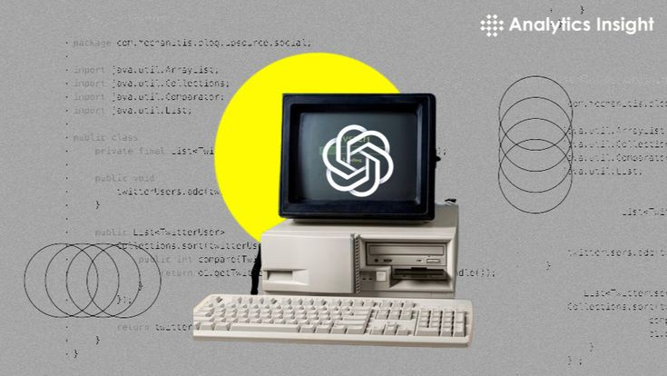

En nuestra vida actual la presencia de las inteligencias artificiales es algo que cada vez se va volviendo más normalizaso, pero ¿en realidad sabemos qué es lo que estamos empleando en nuestro día a día? Podemos definir a la Inteligencia Artificial (IA) como la tecnología que permite que las computadoras simulen la inteligencia humana y las capacidades humanas de resolución de problemas.
Al final del día, la IA es una herramienta que busca facilitar el proceso de una actividad o proyecto. Con la capacidad de la IA de tener un proceso de razonamiento una persona puede apoyarse para encontrar soluciones u otras clase de aportaciones a su proyecto sin la necesidad de pedir ayuda a terceros.
A pesar de todos los aspectos positivos que tiene esta clase de tecnología el uso que se le da no llega a ser el más adecuado, por lo que su uso tan desmedido trae consigo distintos problemas que afectan a la población general (a menor o mayor escala.)
| VENTAJAS | DESVENTAJAS |
|---|---|
| Automatización eficiente | Desplazamiento laboral |
| Aumento de la precisión | Sesgo y discriminación |
| Mejora de la productividad | Problemas y preocupaciones de privacidad y seguridad |
| Personalización y experiencia del cliente | Dependencia, manipulación y desinformación |
| Avbances en la atención médica | Armas autónomas |
Todos conocemos la historia de Alan Turinf y su importancia en la creación de computadoras inteligentes, pero no se empieza a hablar de inteligencia artificial en los términos que hoy la conocemos hasta 1956, cuando John McCarthy, Marvin Minsky y Claude Shannon acuñaron formalmente el término durante la conferencia de Dartmouth denominada “Dartmouth Summer Research Project on Artificial Intelligence” (Proyecto de investigación de verano de Dartmouth sobre inteligencia artificial).
En tal conferencia, se partía de la premisa de que “la conjetura de que cada aspecto del aprendizaje o cualquier otra característica de la inteligencia puede, en principio, ser descrito con tanta precisión que puede fabricarse una máquina para simularlo”. De hecho, a McCarthy también se le atribuye acuñar el término “cloud computing”, y junto a Minsky, fundó el laboratorio del MIT donde surgirían las primeras teorizaciones y prototipados de inteligencia artificial
En 1987 Martin Fischles y Oscar Firschein describieron lo que deberían ser los 12 atributos de un agente inteligente:
| ATRIBUTOS DE UN AGENTE INTELIGENTE | ||
|---|---|---|
| Tener actitudes mentales tales como creencias e intenciones. | Tener la capacidad de obtener conocimiento, es decir, aprender. | Poder resolver problemas, incluso descomponiendo problemas complejos en otros más simples. |
| Capaz de realizar operaciones más complejas. | Poseer la capacidad de dar sentido, si es posible, a ideas ambiguas o contradictorias. | Planificar, predecir consecuencias, evaluar alternativas (como en los juegos de ajedrez) |
| Conocer los límites de sus propias habilidades y conocimientos. | Poder distinguir a pesar de la similitud de las situaciones. | Poder ser original, creando incluso nuevos conceptos o ideas, y hasta utilizando analogías. |
| Poder generalizar. | Poder percibir y modelar el mundo exterior. | Poder entender y utilizar el lenguaje y sus símbolos. |
De esta forma, el fin de la creación de una inteligencia artificial no solo se basaría en ser capaz de imitar el raciocinio humano, sino emular la mente humana, funcionar y responder como tal, lo que conlleva evolucionar y alcanzar un conocimiento superior al que fue concebido.
